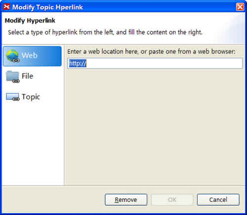

Hyperlinks can be used to connect maps to websites, folders, or files such as Excel or PDF documents, even another topic in current workbook. Each topic can be given a URL and presented as a hyperlink(multiple URLs cannot be associated with a topic).
You can easily create, open, modify, and cancel existed hyperlink. Here's how:
To Create hyperlink:
- Select a topic.
-
Open the hyperlink dialog with either way below:
-
Choose 'Modify > Hyperlink' on the menu.

-
Click hyperlink icon
 on the toolbar.
on the toolbar.
- Press 'Ctrl + H' (or Command + H for Mac users).
- Right click mouse to open context menu, and select "Hyperlink"
-
Choose 'Modify > Hyperlink' on the menu.
- There are three kinds link in XMind.
- "Web": Enter the URL(for example: http://www.XMind.net).
- "File": Add a local file or folder link. You can use Absolute or Relative to link local file/folder.
- "Topic": Link a topic in current workbook.
- Click "OK", and finish.

To Open a hyperlink
- Select topic with Hyperlink.
-
There are two ways to open a hyperlink:
- From Menu:
- For Web link: Select "Modify > Open Hyperlink".
- For local file: Select "Modify > Open File".
- For local folder: Select "Modify > Open Folder".
- For Topic: Select "Modify > Go To Topic"
- Right-click mouse and open topic context menu, select "Open Hyperlink", "Open File", "Open Folder", or "Go To Topic".
- From Menu:
To Modify a Hyperlink
- Select the topic with hyperlink
- Right-click to open context menu, and select "Hyperlink" to open hyperlink dialog
- Modify the link in the dialog.
- Click "ok" to finish.
To Cancel a hyperlink
- Select the topic with hyperlink.
- Right-click to open context menu, select "Cancel Hyperlink".

You may also be interested in...